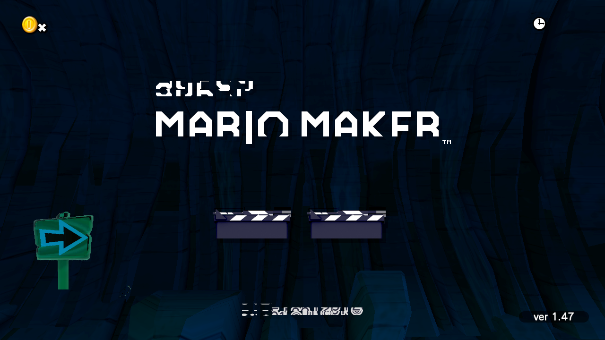
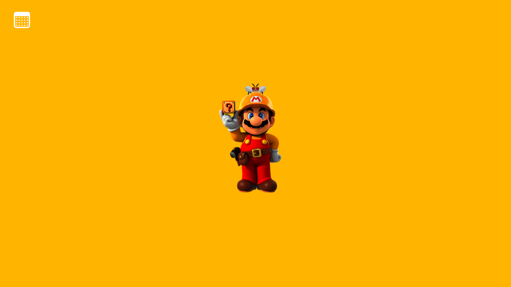
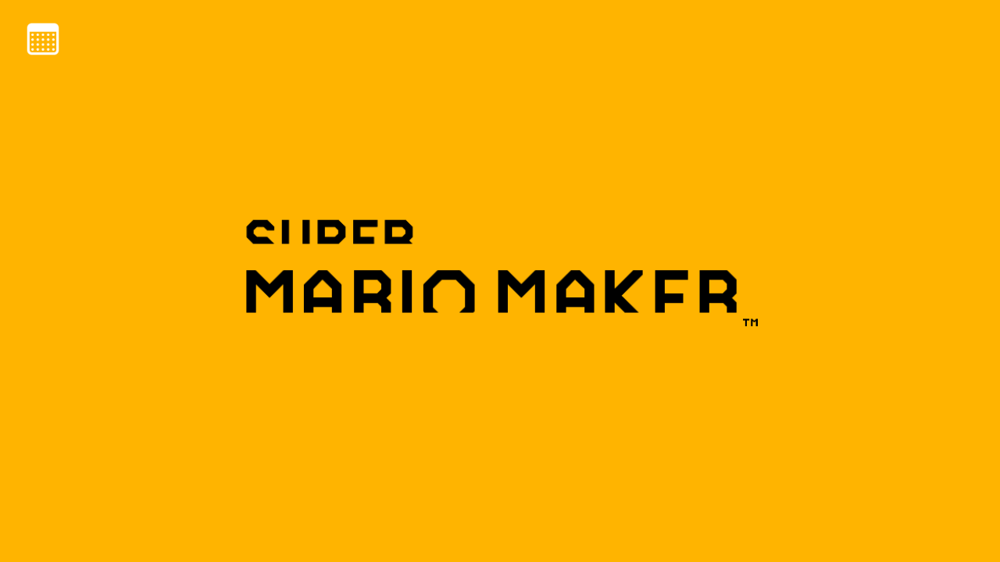

Latest screenshots
captured by the emulator


Roadmap
22 phases from tools to real hardwareThe roadmap loads from the project's live record. If nothing shows up, open this page while signed in.
Activity
newest first- –Updates are posted here after each step is built, tested and committed.
History of the Wii U
the console this project brings back- Revealed at E3 as Nintendo's successor to the Wii, built around a tablet-style controller with its own screen: the Wii U GamePad.
- Launches in North America on November 18, then Europe and Australia (Nov 30) and Japan (Dec 8), in an 8 GB Basic and a 32 GB Deluxe model. Launch games include New Super Mario Bros. U, Nintendo Land and ZombiU, and Miiverse, a built-in social network, goes live.
- Big first-party year: Super Mario 3D World, Pikmin 3 and The Legend of Zelda: The Wind Waker HD.
- Mario Kart 8 and Super Smash Bros. for Wii U arrive and become the console's best sellers.
- Splatoon and Super Mario Maker launch. Cemu, the first Wii U emulator, appears that October.
- The Legend of Zelda: Breath of the Wild launches on Wii U and on its replacement, the Nintendo Switch. Production has already ended; lifetime sales finish at 13.56 million. Many Wii U games later return on Switch.
- Miiverse shuts down.
- The Wii U eShop closes to new purchases.
- Nintendo Network goes offline, ending official online play. The fan-run Pretendo Network keeps some of it alive, and emulators keep the library playable.
View this project on GitHub · Download the demos (Windows) · Fan project page. Not affiliated with or endorsed by Nintendo.